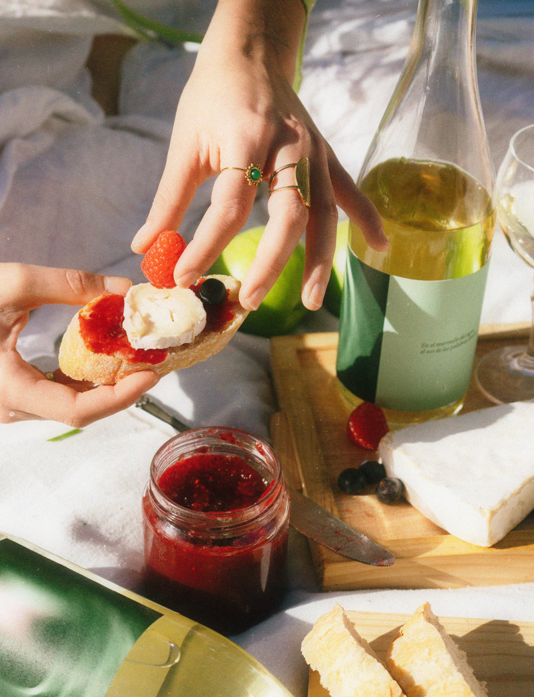
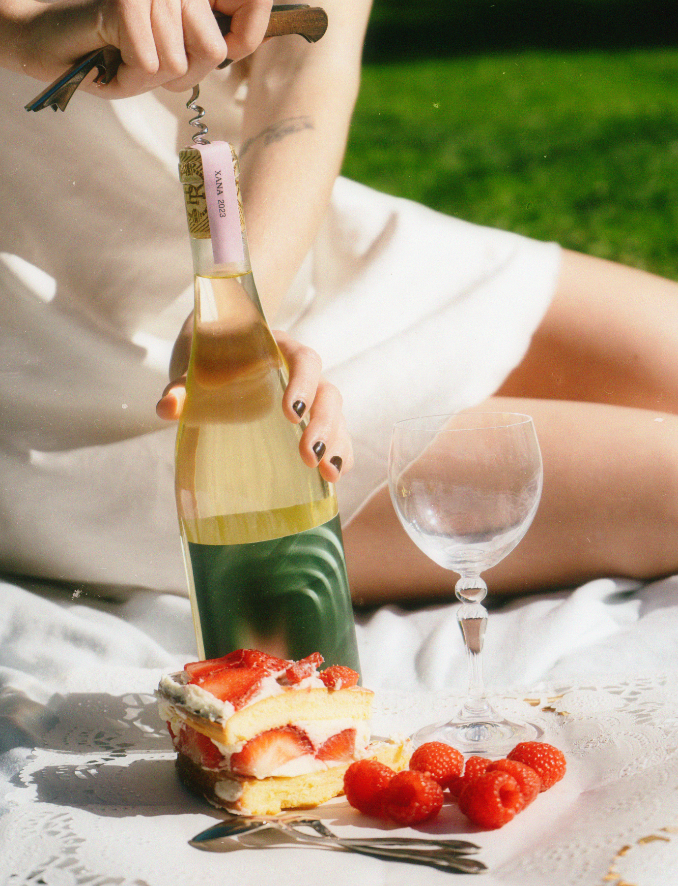

Xana
Client: University Project
Year: 2025
Xana is an Asturian white wine that combines tradition and finesse. Produced by a small family winery, it transmits the winemaking heritage from generation to generation, preserving its essence while incorporating a subtle renewal. Inspired by the xana nymphs of Asturian folklore, it seeks to awaken romanticism and celebrate the poetry of first feelings.
Read more
The project stems from the union of tradition, mythology, and emotion: the creation of Xana preserves family history, passed down from grandmother to mother and from mother to daughter, while adding a touch of modernity that updates its identity without losing its authenticity. Inspired by the figure of Echo and the xanas, nymphs tasked with protecting loved ones, Xana is conceived as an ode to romance, inviting us to celebrate first feelings and toast to first words of love. Its identity conveys delicacy, authenticity, and an emotional connection to local tradition and culture.

